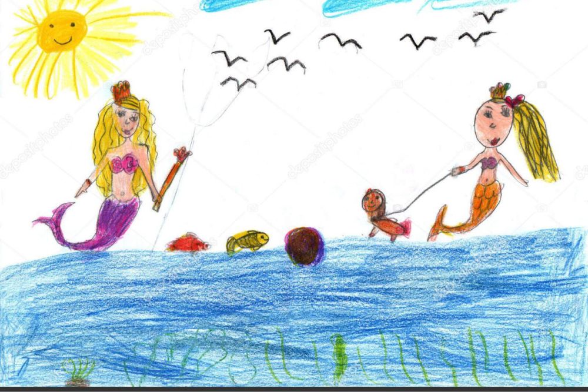
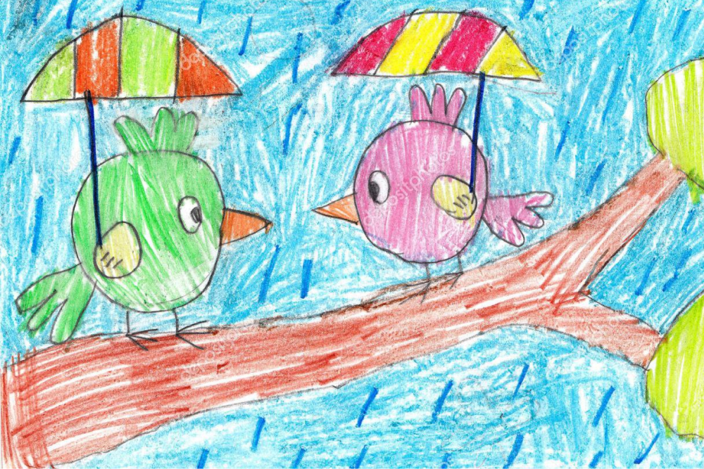
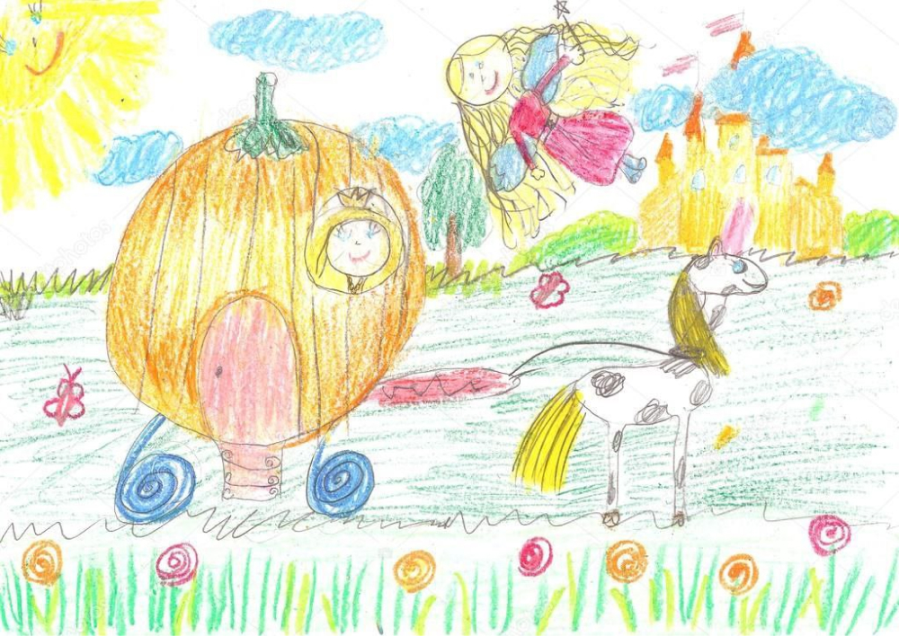

Мой ребенок плохо говорит. Что делать?
Как решить проблемы с речью
Речевые нарушения у детей встречаются в наши дни все чаще: по официальной статистике, 58% ребят имеют речевые патологии. Такие проблемы обязательно должны решаться комплексно, ведь только системная работа специалистов высокого уровня приведет к успеху. Знания, методики, новые технологии из разных смежных сфер тесно сплетаются ради того, чтобы ребенок говорил связно, логично, без нарушений.
Как сегодня корректируют речевые нарушения? На каких принципах основаны современные методы лечения?
Под речевыми нарушениями специалисты понимают различные отклонения от нормы речевого развития. Безусловно, легче всего коррекции речевых нарушений поддаются дети дошкольного возраста, поэтому мы советуем родителям внимательно прислушиваться к детской речи. Если вам кажется, что речь дается ребенку с трудом, он плохо повторяет звуки, заикается, придумывает непонятный язык или вовсе молчит, следует обратиться за помощью специалистам. Многие проблемы невозможно разрешить в домашних условиях, в то время как опытный врач, логопед сможет установить причину патологии и предложит варианты, как от нее избавиться. Помните, волшебной таблетки не существует! Связная речь — это непростая комплексная работа, но ее итогом будете довольны и вы, и ваш ребенок.
Методов коррекции существует великое множество. Так, логопед выбирает подходящие варианты в зависимости от индивидуальных особенностей каждого юного пациента. Его работа строится на нескольких принципах, которые позволяют всесторонне увидеть проблему и, соответственно, быстро и грамотно ее решить. Специалистом учитываются возраст ребенка, структуру дефекта, причины, которые к нему привели, поэтапность процесса. Вот почему персонализация так важна: личные особенности, умноженные на современные методы, дают отличный результат.
Если углубляться в логопедические занятия, то во время их проведения используются наглядные, словесные и практические методы. Например, для постановки звука чаще всего применяют наглядные и практические методы, а для автоматизации (закрепления) — словесные.
К практическим методам относятся упражнения, игры и моделирование. В число наглядных методов входят наблюдение, рассматривание картинок, рисунков. Основными словесными методами являются рассказ, беседа, чтение. Вы, наверное, помните, как в детстве родители расспрашивали вас об увиденном фильме или прочитанной книге? И внезапно оказывалось, что рассказать все, что хочется, сложно — мысли путаются, слова улетают, картинки в голове вытесняют одна другую. А если в речевой деятельности ребенка есть нарушения, то связный монолог и вовсе превращается в испытание. Логопед поможет ребенку преодолеть и психологические, и речевые барьеры.
Но логопед не единственный специалист, который помогает детям на пути к чистой речи. Зачастую в связке с логопедом работает невролог. В его компетенции назначение таких важных обследований, как ЭЭГ, ЭхоЭГ, МРТ. Также невролог вправе назначить лекарственную терапию и отправить на консультацию к физиотерапевту.
В коррекции заикания успешно проявил себя «ЛогоБОС» — логокоррекционный комплекс биологической обратной связи. С его помощью формируется правильное дыхание, артикуляция, оттачивается темп, ритм речи, появляется уверенность в общении, а это так важно для каждого ребенка
Какие специалисты работают в центре? Кто и чем может помочь ребенку? Помогаете ли вы взрослым пациентам?
В центре работает прекрасная команда высококвалифицированных профессионалов разного профиля, в которую входят неврологи, логопеды, дефектологи, медицинские психологи, нейропсихологи, физиотерапевты, врач ЛФК, остеопат. Обратите внимание, мы готовы помогать не только детям с двух лет, но и взрослым с такими нарушениями, как:
- — задержка речевого развития;
- — задержка психического развития;
- — алалия;
- — дизартрия;
- — заикание;
- — общее недоразвитие речи;
- — дисграфия и дислексия;
- — синдром дефицита внимания и гиперактивности;
- — расстройство аутистического спектра;
- — фонетико-фонематическое недоразвитие речи;
- — фонетическое нарушение речи.
Мнение о том, что во взрослом возрасте коррекция нарушений речи не дает результатов — устаревший миф, который пора забыть раз и навсегда. Наука и медицина не стоят на месте. Раньше действительно помочь взрослым было сложно, но современное оборудование и новые методы комплексно помогают решить очень многие, казалось бы, нерешаемые вопросы. Обращение за помощью в Центр развития речи — залог профессиональной помощи и поддержки.
Какие занятия по коррекции речи предлагаются в центре?
Центр готов предложить вам несколько вариантов работы:
- — индивидуальные занятия с логопедом, дефектологом, нейропсихологом и медицинским психологом;
- — комплексные программы по коррекции речевых и поведенческих нарушений.
Индивидуальные занятия с логопедом — важнейшая часть работы. Подробно остановимся на том, как они проходят, потому что у многих родителей возникает вопрос, что будут делать с моим ребенком. Знакомство начинается с диагностики, на которой специалист выявит существующие нарушения.
Все больше и больше детей имеют те или иные отклонения в речевом развитии. Даже если ребенок рано заговорил и довольно четко произносит звуки, то встречаются и иные трудности: дислексия, дисграфия, неумение строить предложения, трудности пересказа, недостаточный словарный запас, аграмматизмы. Специалисты центры укажут на нарушения и, главное, посоветуют, в каком направлении двигаться дальше — к кому обратиться за индивидуальной помощью, как заниматься с ребенком дома. Правильный вектор и понимание ситуации помогают родителям яснее представлять, что происходит с их ребенком.
Мы настоятельно рекомендуем обращаться за помощью в центр, если вашему ребенку исполнилось два года, а он не говорит. Иначе вы рискуете упустить момент, когда нарушения можно исправить легко и быстро.
Если в четыре года ребенок говорит плохо, не произносит четко звуки — это тоже повод для визита к специалисту. Логопед определит особенности дефекта, даст советы, как в дальнейшем будет строиться работа.
Индивидуальные занятия с психологом проходят примерно по такому же плану, однако медицинский психолог диагностирует особенности по своему профилю. Он работает с нарушением высших психических функций — памяти, внимания, мышления. Занятия с психологом не просто рекомендуются, а необходимы детям при интеллектуальных нарушениях, особенностях эмоционально-волевой сферы, СДВГ, негативизме, расстройствах аутистического спектра, заикании.
Индивидуальные занятия проводятся и с нейропсихологом, который определяет как работает мозг ребенка, как организованы психические процессы, помогает выявить особенности развития ребенка и причины возможных трудностей в поведении и учебе.
В чем отличие психолога от смежного с ним специалиста — нейропсихолога? Этот вопрос возникает у многих. Психолог изучает эмоционально-волевую сферу и эмоционально-личностные проблемы, а нейропсихолог — мозговую анатомию и физиологию.
Еще один специалист, оказывающий индивидуальную помощь — дефектолог-коррекционный педагог. Его основная задача — обучение и воспитание детей с ограниченными возможностями здоровья. Он, как вторая мама, помогает детям адаптироваться в мире, прививает им бытовые и социальные навыки, без которых жизнь в социуме невозможна.
Какой график работы центра? Где и как можно записаться?
Записаться к специалистам можно через сайт, по телефону + 7 (495) 777-48-49 и при личном посещении нашего центра. Недавно появилась возможность записи к специалистам при помощи Яндекс станции «Алиса». Центр работает с 09.00 до 21.00 в будние дни и выходные. Приходите — вас ждет всесторонняя профессиональная помощь и поддержка!
Развитие речи — процесс долгий, однако его плоды настолько ощутимы и важны, что этот путь стоит приложенных трудов. Наблюдайте за вашими детьми, проявляйте интерес к их «болтологии», и не тяните, если необходима помощь специалистов. Результат совместной работы не заставит себя ждать.